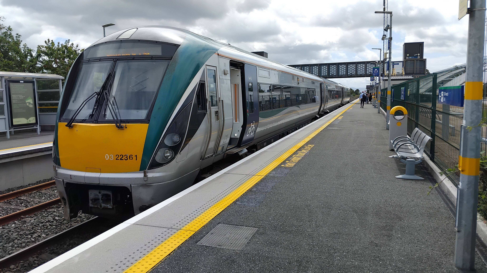

This was, to put it simply, an adventure! Everything fell apart on day 1 (and also at the very end...) so there was a fair amount of playing catch up to pack in as much as I wanted to. I based myself in Dublin for 4 days, Galway for 3 and Belfast for the final 4. There was plenty of Irish Rail action, but also a bit of time to have same fun and explore, which I maybe didn't manage quite so much of on previous trips. This page will - at some point - become a catalogue of what I got up to.